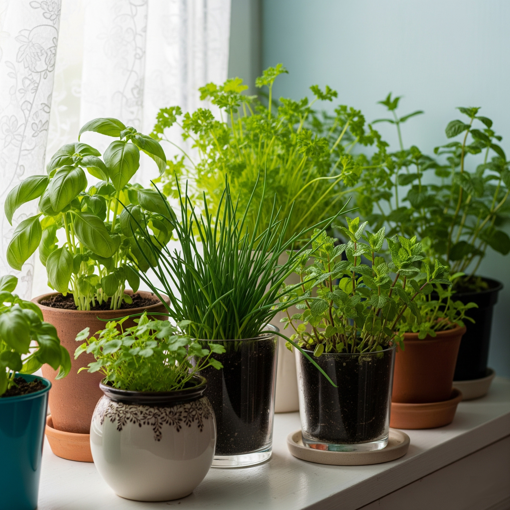

Ervas Aromáticas que São Perigosas para Gatos (e Alternativas Seguras)

Muitas pessoas amam cultivar ervas aromáticas em casa — seja para cozinhar, perfumar o ambiente ou criar um cantinho verde e aconchegante. Porém, quando convivemos com gatos, é fundamental saber que algumas dessas ervas podem representar um sério risco à saúde dos felinos. Neste post, vamos listar quais ervas são perigosas, quais são seguras e como você pode montar um espaço de ervas totalmente pet-friendly.
Os gatos têm um metabolismo diferente do nosso. Certos compostos presentes em ervas aromáticas, como óleos essenciais, alcaloides ou fenóis, podem ser tóxicos para eles, causando sintomas que variam de irritação gastrointestinal até problemas neurológicos ou hepáticos.
❌ Ervas que devem ser evitadas:
- Alecrim — pode causar desconforto gastrointestinal e irritação.
- Hortelã — contém mentol e outros compostos tóxicos.
- Orégano — pode causar vômitos e diarreia.
- Tomilho — o óleo essencial é tóxico se ingerido.
- Sálvia — pode afetar o sistema neurológico dos gatos.
- Lavanda — perigosa em difusores e em contato direto.
✅ Ervas seguras e amigáveis:
- Erva-do-gato (Nepeta cataria) — estimula brincadeiras e é inofensiva.
- Valeriana — calmante natural para gatos.
- Hera sueca — pendente e segura.
- Manjericão — geralmente seguro em pequenas quantidades.
- Camomila-alemã — uso moderado e somente essa variedade.
| Erva Aromática | Tóxica para Gatos? | Observações |
|---|---|---|
| Alecrim | Sim | Evitar deixar acessível |
| Hortelã | Sim | Folhas e óleos são tóxicos |
| Orégano | Sim | Causa desconforto digestivo |
| Lavanda | Sim | Muito perigosa em difusores |
| Manjericão | Não | Pode ser cultivado com cuidado |
| Erva-do-gato | Não | Estimula e diverte os gatos |
| Valeriana | Não | Efeito calmante e atrativo |
| Camomila-alemã | Cautela | Somente a variedade alemã e em pequenas quantidades |
💡 Dicas práticas:
- Prefira cultivar apenas as ervas seguras em locais acessíveis.
- Plantas tóxicas devem ficar fora de alcance ou fora de casa.
- Evite difusores com óleos essenciais perto dos gatos.
- Observe qualquer alteração de comportamento após o contato com aromas ou folhas.
- Monte um cantinho verde pet-friendly que estimule seu gato com segurança.
Ervas aromáticas trazem vida e perfume ao lar, mas exigem atenção quando há felinos por perto. Informe-se, escolha bem suas espécies e crie um espaço lindo e seguro para todos os moradores — humanos ou felinos.
← Voltar para o blog